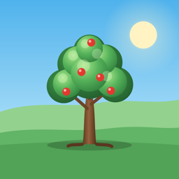

Günlük Düzen
Hedeflerinle ağacını büyüt
Su içmek, kitap okumak, ders çalışmak, spor ya da kendi koyduğun her hedef. Yaptıkça XP kazan, seviye atla; bahçendeki ağaç tohumdan asırlık çınara dönüşsün.
- Sayı, süre ve yaptım/yapmadım hedefleri
- Günün görevi, seriler ve 15 rozet
- Odak modu ve hatırlatmalar
- 5 haftalık takvim ve istatistikler
- Hesap yok, reklam yok; veriler yalnızca telefonunda
Günlük Düzen (English). A habit tracker where your goals grow a tree. Count, timer and yes/no goals, daily quests, streaks, badges, focus mode and reminders. No account, no ads; your data stays on your phone.